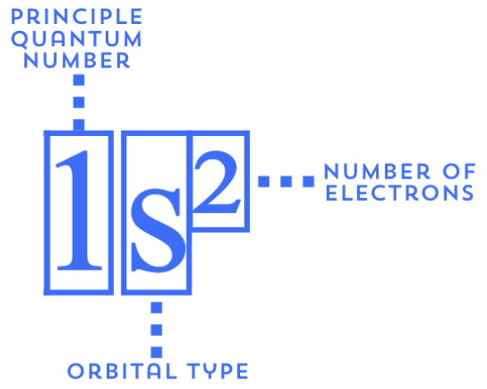
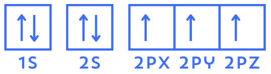

Orbital Notations
The difference between science and magic is that we try to measure and label phenomena, and orbitals are no different. In this lesson, I will quickly teach you how to write orbital notation.
We have briefly looked at how orbitals are labelled by their principle number and their orbital type, but that’s not the whole story. In typical notation, orbitals are written like this:

Atoms continue on with this pattern, for example, the notation for oxygen would be 1s² 2s² 2p⁴, however, some scientists prefer knowing which exact p orbital is filled, and so you may see oxygen being written as 1s² 2s² 2p²ₓ 2p²ᵧ, the subscript defining each p orbital and their respective axis.
In the case of ions, the atomic shorthand is used to emphasize that the atom is no longer neutral. You can then adjust the orbital notation based on if electrons have been added or removed.
One valuable shortcut that you may see being used is called noble gas notation. Instead of writing every orbital, you start off from the closest noble gas and assume its orbital notation from there. For example, you can write calcium as both 1s² 2s² 2p⁶ 3s² 3p⁶ 4s², or simply [Ar] 4s².
The reason for this stems from the fact that only the valence electrons are used in bonding and other interactions with atoms. The noble gases are a quick and reliable way to signal a full valence shell, ignoring the inner electrons that aren’t as important in bonding.
Now comes the difficult part. As you probably remember from earlier, the energy levels of orbitals begin to overlap as their quantum principle number (aka their electron shell number) increases. We know from earlier lessons that electrons (minus some rare exceptions) will fill the lowest possible energy orbital first, according to the Aufbau Principle.
The same is true for orbital notation, because 4s orbitals have less energy than 3d orbitals, you must write the 4s orbitals before the 3d orbitals. To showcase, the following orbital notations are from argon all the way to scandium:
- Argon: 1s² 2s² 2p⁶ 3s² 3p⁶
- Potassium: [Ar] 4s¹ (filling the 4s orbitals as they have less energy than 3d orbitals)
- Calcium: [Ar] 4s²
- Scandium: [Ar] 4s² 3d¹ (back to the 3d orbitals)
Scandium can also be written as [Ar] 3d¹ 4s², in principle number order and not electron filling order. Both are widely accepted and up to your own preference.
Another important notation is called electron boxes, where each drawn box represents an orbital, and with up to two arrows drawn inside to represent electrons. One arrow must point upwards, while the other points downwards. The reasoning for this is due to quantum mechanics, and a property known as “spin,” we won’t go into this, but just know it is to distinguish the two electrons. (If you do want to know more, search up the Pauli Exclusion Principle).
A second rule that seems trivial but is extremely important is called Hund’s Rule, which states that electrons will fill orbitals of equal energy singly with the same “spin” before they pair up. This means that you must put the orbitals in a specific order, all with the same spin and one by one, before finally pairing them up.

Electron boxes also abide by the Aufbau Principle, so you will have to fill the orbital boxes by energy level as well. Overall, I highly recommend practicing both of these notations, as they will be used and mentioned in future lessons.